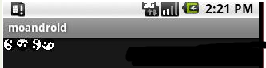
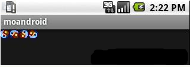
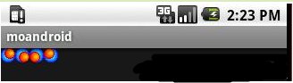

Android 解析Drawable（二）
3、修改Activity中的代码，内容如下：
LinearLayout mLinearLayout;protected void onCreate(Bundle savedInstanceState) {
super.onCreate(savedInstanceState);
mLinearLayout = new LinearLayout(this);
ImageView i = new ImageView(this);
i.setAdjustViewBounds(true);
i.setLayoutParams(new Gallery.LayoutParams(LayoutParams.WRAP_CONTENT,
LayoutParams.WRAP_CONTENT));
mLinearLayout.addView(i);
setContentView(mLinearLayout);
Resources res = getResources();
TransitionDrawable transition = (TransitionDrawable) res
.getDrawable(R.drawable.expand_collapse);
i.setImageDrawable(transition);
transition.startTransition(10000);
}
4、如果修改的没有错误，运行程序，结果显示如下：
初始图片

过渡中的图片

最后的图片

屏幕上动画显示的是：从图片image_expand.png过渡到image_collapse.png，也就是我们在expand_collapse.xml中定义的一个transition动画。看完这个例子，你对Drawable的理解是否又深入些？